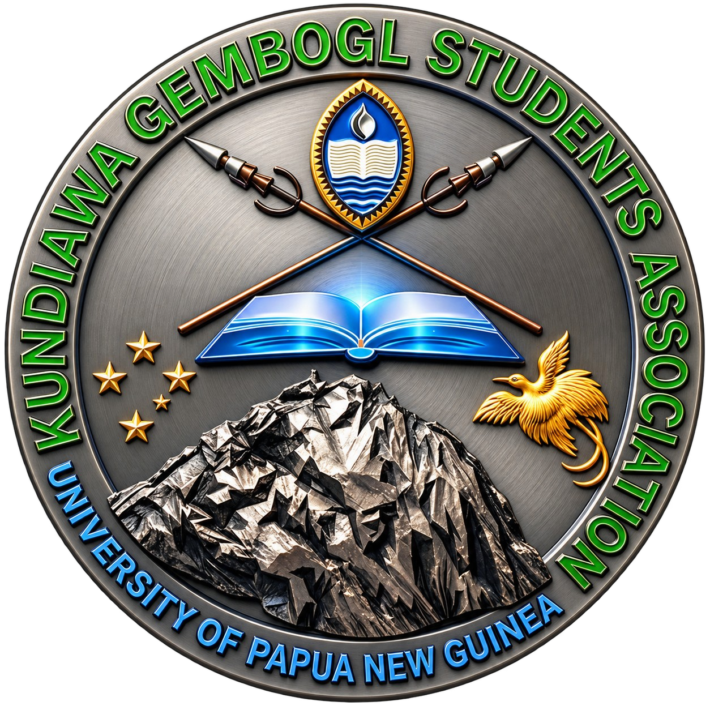

Education
Study support, peer mentoring, information sharing, and guidance for new students navigating university life.

UPNG Kundiawa GemboglKGSA programs are designed around the practical needs of tertiary students and the association's commitment to community wellbeing.
Study support, peer mentoring, information sharing, and guidance for new students navigating university life.
Member welfare information and coordinated support during difficult circumstances, subject to association resources.
Community projects, leadership opportunities, and activities that build a habit of service.
Students, alumni, and community partners can participate by attending events, sharing opportunities, offering mentorship, or supporting approved welfare and community initiatives.
Contact KGSA